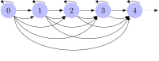

Course Notes for LIN 539
Fall 2022
Prerequisites
While sets are unstructured, they can be combined with an ordering relation to yield a structured object. Usually, this will be a partial order. A set with a partial order defined over it is a partially ordered set or simply poset.
In mathematical terms, a poset is usually treated as a tuple \(\left \langle S, R \right \rangle\) that consists of the set \(S\) and the order \(R\) defined over its elements. Don’t attach too much significance to this, it is just a matter of notation and you wouldn’t want to apply the usual tuple operations to these objects. For instance, we wouldn’t want to concatenate the posets \(\left \langle S_1, R_1 \right \rangle\) and \(\left \langle S_2, R_2 \right \rangle\) to get a 4-tuple \(\left \langle S_1, R_1, S_2, R_2 \right \rangle\), that doesn’t make much sense.
A partially ordered set, or simple poset, is a pair \(\left \langle S, R \right \rangle\) such that \(S\) is some set and \(R\) is a partial order over \(S\).
Sometimes, \(S\) is also called the carrier of the poset \(\left \langle S, R \right \rangle\).
The set of natural numbers is \(\mathbb{N} \mathrel{\mathop:}=\left \{ 0, 1, 2, 3, \ldots \right \}\). By itself, it has no internal order. But of course we can order the natural numbers according to the familiar relation \(\leq\), and then we get the poset \(\left \langle \mathbb{N}, \leq \right \rangle\). The carrier of \(\left \langle \mathbb{N}, \leq \right \rangle\) is \(\mathbb{N}\).
We can take the set \(H\) of all humans that ever lived or are currently alive. We then order this set by the ancestor relation. Since that is a partial order, the result is a poset.
Often it is very useful to visualize posets. In this case, elements of the set are represented as nodes in a figure, and arrows between the nodes indicate that they are related via the order relation. Here is what this looks like for the natural numbers ordered by \(\leq\).

Since that is very convoluted, it is customary to omit arrows that can be inferred from the properties of the order. First, one omits all arrows that can be inferred from transitivity. That is to say, if there is an arrow from \(x\) to \(y\) and another arrow from \(y\) to \(z\), we do not need an arrow from \(x\) to \(z\).
And if we know that the ordering relation \(R\) is such that \(x \mathrel{R} x\) holds for every \(x\), then we do not need all the loops either.
Caution: due to these conventions, a depiction of \(\left \langle \mathbb{N}, \leq \right \rangle\) will look the same as one for \(\left \langle \mathbb{N}, < \right \rangle\), but those are different posets.
Take the set \(\mathbb{Z} \mathrel{\mathop:}=\left \{ 0, -1, 1, -2, 2, -3, 3, \ldots \right \}\) of integers. Let \(x \prec y\) iff \(x^2 \leq y^2\). Sketch a figure of the poset \(\left \langle \mathbb{Z}, \prec \right \rangle\). Avoid all arrows that can be inferred from the general properties of \(\prec\).
Let \(S\) be the set of all substrings of the word poset. Draw the strict poset \(\left \langle S, \sqsubset \right \rangle\), where \(\sqsubset\) is the proper substring relation: \(x \sqsubset y\) iff there is some \(z \neq \varepsilon\) such that \(x \cdot z = y\).
Now suppose that we used \(\sqsubseteq\) instead: \(x \sqsubseteq y\) iff there is some (possibly empty) \(z\) such that \(x \cdot z = y\). Do you have to change anything about your figure?
Suppose that we have some poset \(\left \langle S, \leq \right \rangle\), where \(\leq\) is an arbitrary partial order. Given a set \(x \in S\), we can ask which elements are less than \(x\) and which elements are greater than \(x\). These are the lower bounds and upper bounds of \(x\). This is an important notion, and it can be generalized from a single member of \(S\) to whole subsets of \(S\).
The definition for lower and upper bounds of a single element in a poset is straightforward.
Let \(\left \langle S, \leq \right \rangle\) be an arbitrary poset and \(x\) an arbitrary member of \(S\). Then \(y \in S\) is a lower bound for \(x\) iff \(y \leq x\). We call \(y\) an upper bound iff \(x \leq y\).
Consider the poset below, which consists of all subsets of \(\left \{ 1,2,3 \right \}\) ordered by the subset relation \(\subseteq\).
The upper bounds of \(\left \{ 1 \right \}\) are \(\left \{ 1 \right \}\), \(\left \{ 1,2 \right \}\), \(\left \{ 1,3 \right \}\), and \(\left \{ 1,2,3 \right \}\). Its lower bounds are \(\left \{ 1 \right \}\) and \(\emptyset\).
Thinking of upper and lower bounds in pictorial terms may strengthen your intuitions. In the figure below, upper bounds are in dashed boxes, and lower bounds in dashed circles. We underline \(\left \{ 1 \right \}\) to indicate that this is the element for which we are computing upper and lower bounds.
Draw corresponding diagrams indicating the upper and lower bounds of
Say whether the following is true or false, and justify your answer: if \(\left \langle S, \leq \right \rangle\) is a poset, then it holds for all \(x, y \in S\) that \(y\) is both an upper and a lower bound for \(x\) iff \(x = y\).
While it can be interesting to know the lower and upper bounds for a given element, very often we want to know the bounds for multiple elements. For instance, which elements are such that they are greater than both \(x\) and \(y\)? To this end, we generalize bounds from elements of a poset to subsets of the poset. We say that \(y\) is an upper (or lower) bound for subset \(T\) iff \(y\) is an upper (or lower) bound for every member of \(T\).
Let \(\left \langle S, \leq \right \rangle\) be a poset and \(T\) and arbitrary subset of \(S\). Then the set of upper bounds of \(T\) is \[\mathrm{ub}(T) \mathrel{\mathop:}=\left \{ y \in S \mid x \leq y \text{ for all } x \in T \right \}.\] Similarly, the set of lower bounds of \(T\) is \[\mathrm{lb}(T) \mathrel{\mathop:}=\left \{ y \in S \mid y \leq x \text{ for all } x \in T \right \}.\]
Consider the poset \(\left \langle \left \{ 0,1,2,3,4 \right \}, \leq \right \rangle\), the set of the first five natural numbers ordered in the usual fashion via \(\leq\). The lower bounds of \(2\) and \(4\) are \(0\), \(1\), and \(2\) as these are the only elements that are less than \(2\) and less than \(4\). More succinctly, \(\mathrm{lb}(\left \{ 2,4 \right \}) = \left \{ 0,1,2 \right \}\).
The only upper bound of \(2\) and \(4\) is \(4\) as no other member of the carrier \(\left \{ 0,1,2,3,4 \right \}\) is greater than both of those numbers. Hence we write \(\mathrm{ub}(\left \{ 2,4 \right \}) = \left \{ 4 \right \}\).
Given some arbitrary poset \(\left \langle S, \leq \right \rangle\), what are \(\mathrm{lb}(\emptyset)\) and \(\mathrm{ub}(\emptyset)\)? Justify your answer.
Consider once more the poset of all subsets of \(\left \{ 1,2,3 \right \}\) ordered by the subset relation \(\subseteq\).
The upper bounds of \(\left \{ 1 \right \}\) and \(\left \{ 2 \right \}\) are \(\left \{ 1,2 \right \}\) and \(\left \{ 1,2,3 \right \}\). Their only lower bound is \(\emptyset\). In mathematical notation, this is \[\mathrm{lb}(\left \{ \left \{ 1 \right \}, \left \{ 2 \right \} \right \}) = \left \{ \left \{ 1,2 \right \}, \left \{ 1,2,3 \right \} \right \}\] and \[\mathrm{ub}(\left \{ \left \{ 1 \right \}, \left \{ 2 \right \} \right \}) = \left \{ \emptyset \right \}.\]
Yes, those are sets of sets. You have to keep in mind that \(\mathrm{lb}\) and \(\mathrm{ub}\) always apply to the set of things whose lower and upper bounds we want to compute. In the case at hand, these things themselves are sets, so \(\mathrm{lb}\) and \(\mathrm{ub}\) take a set of sets as their argument. And since they return a set of things that are lower/upper bounds, we get back a set of sets.
We can also depict this in the graphical format that we used for the lower and upper bounds of individual elements.

Given the same poset, the upper bounds of \(\left \{ 1 \right \}\) are \(\left \{ 1 \right \}\), \(\left \{ 1,2 \right \}\), \(\left \{ 1,3 \right \}\), and \(\left \{ 1,2,3 \right \}\), while the lower bounds are \(\left \{ 1 \right \}\) and \(\emptyset\). Hence we have \(\mathrm{ub}(\left \{ \left \{ 1 \right \} \right \}) = \left \{ \left \{ 1 \right \}, \left \{ 1,2 \right \}, \left \{ 1,3 \right \}, \left \{ 1,2,3 \right \} \right \}\) and \(\mathrm{lb}(\left \{ \left \{ 1 \right \} \right \}) = \left \{ \emptyset, \left \{ 1 \right \} \right \}\). Again the notation is slightly confusing as we are looking at sets of elements of the poset, and these elements just so happen to be sets themselves. Relying once more on our graphical format, we see that \(\mathrm{ub}(\left \{ \left \{ 1 \right \} \right \})\) and \(\mathrm{lb}(\left \{ \left \{ 1 \right \} \right \})\) yield the same upper and lower bounds that we computed for \(\left \{ 1 \right \}\) at the beginning of this unit.
Explain why the set of upper bounds of some element \(x\) of a poset is identical to \(\mathrm{ub}(\left \{ x \right \})\).
One more example with the same poset. The upper bounds of \(\left \{ 2 \right \}\), \(\left \{ 3 \right \}\), and \(\left \{ 2,3 \right \}\) are \(\left \{ 2,3 \right \}\) and \(\left \{ 1,2,3 \right \}\), whereas their only lower bound is \(\emptyset\). We write this more succinctly as \(\mathrm{ub}(\left \{ \left \{ 2 \right \}, \left \{ 3 \right \}, \left \{ 2,3 \right \} \right \}) = \left \{ \left \{ 2,3 \right \} \left \{ 1,2,3 \right \} \right \}\) and \(\mathrm{lb}(\left \{ \left \{ 2 \right \}, \left \{ 3 \right \}, \left \{ 2,3 \right \} \right \}) = \left \{ \emptyset \right \}\). Once again we can also depict this in the graphical format:

Given the poset in the previous example, compute all of the following:
Consider \(\left \langle \left \{ 0,1,2,3,4 \right \}, \leq \right \rangle\), the set of the first five natural numbers ordered in the usual fashion via \(\leq\). Using the pictorial format described above, indicate the lower and upper bounds for the following subsets:
Since \(\mathrm{lb}\) and \(\mathrm{ub}\) are functions from sets to sets, the output of one can be the input for the other. Compute \(\mathrm{lb}(\mathrm{ub}({\left \{ 0,3 \right \}}))\) over \(\left \{ 0,1,2,3,4 \right \}\) ordered by \(\leq\). By comparison, what is \(\mathrm{ub}(\mathrm{lb}(\left \{ 0,3 \right \}))\)?
Now consider \(\left \langle \mathbb{N}, \leq \right \rangle\) instead, the set of all natural numbers ordered via \(\leq\). For each one of the following statements, say whether it is true or false and justify your answer.
Note that the existence of upper and lower bounds isn’t guaranteed once we move from individual elements of the posets to subsets. Take for instance the poset \(\left \langle \left \{ 1,2 \right \}, R \right \rangle\) where \(x \mathrel{R} y\) iff \(x = y\). Yes, this is still a poset (there is an order, and it is partial). In this case, \(\mathrm{lb}(\left \{ 1,2 \right \}) = \emptyset\) because there simply is no \(y\) such that \(y \mathrel{R} 1\) and \(y \mathrel{R} 2\). In other words, \(1\) and \(2\) don’t have any lower bounds. For the same reason, they don’t have any upper bounds either.
You might think that the poset in the previous example is somehow defective or pathological because no element is related to any element except itself. But that’s not really the issue, as is witnessed by the structure below.
Find the smallest subset \(S\) such that \(\mathrm{ub}(S) = \emptyset\) and \(\mathrm{lb}(S) = \emptyset\).
Say whether the following is true or false, and justify your answer:
Given some poset \(\left \langle S, \leq \right \rangle\), it holds for every finite subset \(\left \{ s_1, \ldots, s_n \right \}\) of \(S\) that \[\mathrm{ub}(\left \{ s_1, \ldots, s_n \right \}) = \mathrm{ub}(\left \{ s_1 \right \}) \cap \mathrm{ub}(\left \{ s_2 \right \} \cap \cdots \cap \mathrm{ub}(\left \{ s_n \right \})\]
Say whether the following is true or false, and justify your answer:
Given some poset \(\left \langle S, \leq \right \rangle\), it holds for every finite subset \(\left \{ s_1, \ldots, s_n \right \}\) of \(S\) that \[\mathrm{lb}(\left \{ s_1, \ldots, s_n \right \}) = \mathrm{lb}(\left \{ s_1 \right \}) \cup \mathrm{lb}(\left \{ s_2 \right \} \cup \cdots \cup \mathrm{lb}(\left \{ s_n \right \})\]
Posets are already a special kind of structure. Among all the possible ways of defining a relation over a set, only those yield a poset where the relation is a partial order. But some posets are even more special because they furnish particular upper or lower bounds for the elements of the poset. These posets are called semilattices and lattices.
The previous unit was only concerned with identifying lower bounds and upper bounds, but not all lower bounds and upper bounds are the same. Some are “closer” to the elements whose bounds we want to compute. This gives us the notion of greatest lower bound and least upper bound.
We return once more to the poset of subsets of \(\left \{ 1,2,3 \right \}\) ordered by the subset relation \(\subseteq\). We have already seen that the upper bounds of \(\left \{ 1 \right \}\) are \(\left \{ 1 \right \}\), \(\left \{ 1,2 \right \}\), \(\left \{ 1,3 \right \}\), and \(\left \{ 1,2,3 \right \}\). And the lower bounds of \(\left \{ 1 \right \}\) are the empty set and \(\left \{ 1 \right \}\) itself.
Among those lower bounds, the greatest lower bound is \(\left \{ 1 \right \}\) because it is closest to \(\left \{ 1 \right \}\). And the least upper bound is also \(\left \{ 1 \right \}\).
We also know already that given the poset above, \(\mathrm{ub}(\left \{ \left \{ 2 \right \}, \left \{ 3 \right \}, \left \{ 2,3 \right \} \right \}) = \left \{ \left \{ 2,3 \right \}, \left \{ 1,2,3 \right \} \right \}\) and \(\mathrm{lb}(\left \{ \left \{ 2 \right \}, \left \{ 3 \right \}, \left \{ 2,3 \right \} \right \}) = \left \{ \emptyset \right \}\).
In this case, the least upper bound is \(\left \{ 2,3 \right \}\) because \(\left \{ 2,3 \right \}\) is less than \(\left \{ 1,2,3 \right \}\) (we have \(\left \{ 2,3 \right \} \subseteq \left \{ 1,2,3 \right \}\)). The greatest lower bound is \(\emptyset\) because there was only one lower bound to begin with.
Looking at those examples, you might have already noticed a peculiar connection. The greatest lower bounds of some subset \(S\) are exactly the upper bounds of the lower bounds of \(S\). And the least upper bounds of \(S\) are exactly the lower bounds of the upper bounds of \(S\).
Given a poset \(\left \langle S, \leq \right \rangle\) and some arbitrary subset \(T \subseteq S\), we call \(\mathrm{lub}(T) \mathrel{\mathop:}=\mathrm{lb}(\mathrm{ub}(T))\) the set of least upper bounds of \(T\). An element of \(\mathrm{lub}(T)\) is also called a lub or a supremum or a join. Similarly, \(\mathrm{glb}(T) \mathrel{\mathop:}=\mathrm{ub}(\mathrm{lb}(T))\) is the set of greatest lower bounds of \(T\). An element of \(\mathrm{glb}(T)\) is also called a glb or an infimum or a meet.
Let us return to the first example, where we saw that the set of upper bounds of \(\left \{ 1 \right \}\) is \(\left \{ \left \{ 1 \right \}, \left \{ 1,2 \right \}, \left \{ 1,3 \right \}, \left \{ 1,2,3 \right \} \right \}\) while the least upper bound of \(\left \{ 1 \right \}\) is \(\left \{ 1 \right \}\) itself. Following our definition, we compute the lub as \[\mathrm{lub}(\left \{ \left \{ 1 \right \} \right \}) = \mathrm{lb}(\mathrm{ub}(\left \{ \left \{ 1 \right \} \right \})) = \mathrm{lb}(\left \{ \left \{ 1 \right \}, \left \{ 1,2 \right \}, \left \{ 1,3 \right \}, \left \{ 1,2,3 \right \} \right \}) = \left \{ \left \{ 1 \right \} \right \}.\] This tells us that \(\left \{ 1 \right \}\) is the only lub of \(\left \{ 1 \right \}\), as expected.
Given the same poset as in the previous examples, compute all of the following:
In the examples so far, there has always been a unique lub and a unique glb. But this isn’t always the case with posets.
We have already seen in the previous units that some posets many not have any lower bounds or upper bounds for at least some subsets of the carrier.
If there’s no lower bounds or upper bounds, then there can’t be any greatest lower bounds or least upper bounds either.
With the poset below, \(\mathrm{ub}(S)\) and \(\mathrm{lb}(S)\) are non-empty for any non-empty subset \(S\) of the carrier. That is to say, any collection of one or more elements has at least one upper bound and at least one lower bound.

However, \(\mathrm{lub}(\left \{ c,d \right \})\) is actually empty. To see this, we first compute \(\mathrm{ub}(\left \{ c,d \right \}) = \left \{ a,b,e \right \}\). We next calcuate \(\mathrm{lb}(\left \{ a,b,e \right \})\), which is the empty set because there is no \(x\) in \(\left \{ a,b,e \right \}\) such that \(x \leq y\) for all \(y \in \left \{ a,b,e \right \}\). Putting these two results together, we get \(\mathrm{lub}(\left \{ c,d \right \}) = \emptyset\).
The reasoning in the example above can be used to prove a powerful result: lubs and glbs are unique.
Let \(T\) be a subset of the carrier of some poset \(\left \langle S, \leq \right \rangle\). If \(\mathrm{lub}(T) \neq \emptyset\), then it contains exactly one element. If \(\mathrm{glb}(T) \neq \emptyset\), then it contains exactly one element.
Try to explain to yourself why this result holds.
Hint: Suppose towards a contradiction that \(\mathrm{lub}(T)\) does contain at least two distinct elements \(x\) and \(y\). How would \(x\) and \(y\) have to be ordered by \(\leq\)? Is this possible in a poset?
Since lubs and glbs are unique, it is often convenient to assume that the functions \(\mathrm{lub}\) and \(\mathrm{glb}\) return this unique element rather than a set containing the element. Quite generally, we can reduce the use of sets in the notation by quite a bit. It is often convenient to write \(x \vee y\) as a shorthand for \(\mathrm{lub}(\left \{ x,y \right \})\), and \(x \wedge y\) as a shorthand for \(\mathrm{glb}(x, y)\). If you didn’t like notation like \(\mathrm{glb}(\left \{ \left \{ 1 \right \}, \left \{ 2 \right \} \right \})\), you can now rejoice because you have the more legible alternative \(\left \{ 1 \right \} \wedge \left \{ 2 \right \}\). The notation can be generalized such that \(\mathrm{lub}(\left \{ s_1, \ldots, s_n \right \}) = s_1 \vee s_2 \vee \cdots \vee s_n\), and similarly for \(\mathrm{glb}\) and \(\wedge\). The operations \(\vee\) and \(\wedge\) are referred to as join and meet.
Writing \(\mathrm{glb}(\left \{ s_1, \ldots, s_n \right \})\) as \(s_1 \wedge s_2 \wedge \cdots \wedge s_n\) is possible because \(\wedge\) is an associative operation: \((x \wedge y) \wedge z = x \wedge (y \wedge z)\). Explain why \(\wedge\) is associative.
Hint: You want to show that \(\mathrm{glb}(\left \{ \mathrm{glb}(\left \{ x, y \right \}), z \right \}) = \mathrm{glb}(\left \{ x, \mathrm{glb}(\left \{ y, z \right \}) \right \})\) if one adopts the convention that the \(\mathrm{glb}\) function returns a unique element rather than a set.
A quick remark on terminology: beginners often confuse the symbols \(\vee\) and \(\wedge\). There’s multiple tricks that might help you remember which is which.
First, think of the poset of subsets of \(\left \{ 1,2,3 \right \}\) we had in the first example of this unit. In this lattice, intersecting two elements (\(\cap\)) is the same as taking their meet (\(\wedge\)), whereas taking their union (\(\cup\)) is the same as taking their join (\(\vee\)). So the symbols for meet and join mirror those for intersection and union.
In addition, you can think of the meet operation as looking at all the lower bounds below and limiting them to just one at the very top, just like \(\wedge\) is broad at the bottom and has only enough room for one thing at the top. The join operation \(\vee\) is the mirror image of that. We look at the upper bounds above and limit it to just one thing at the very bottom.
Finally, the meet symbol \(\wedge\) looks like one half of the letter m at the beginning of meet. And \(\vee\) is the final part of the final letter n of join. This is perhaps the hokiest way of memorizing the symbols, but it’s the one that worked best for me back in the days.
As we have seen, not every poset furnishes a join or a meet for every subset of the carrier. The posets that do are particularly well-behaved and hence get special terms: join semilattice and meet semilattice.
A poset \(\left \langle S, \leq \right \rangle\) is a join semilattice iff \(x \vee y\) exists for all \(x, y \in S\). It is a meet semilattice iff \(x \wedge y\) exists for all \(x, y \in S\). It is a semilattice iff is a join semilattice or a meet semilattice.
For each one of the following depictions of a poset, say whether it is a join semilattice, a meet semilattice, both, or neither.
In practice, the distinction between join and meet semilattices isn’t all that relevant. You can convert between join semilattices and meet semilattices by reversing the order: \(x \mathrel{R} y\) becomes \(y \mathrel{R} x\). In terms of drawings, that’s the same as flipping the semilattice upside-down, or rotating it by 180 degrees.
Consider the poset whose carrier contains the sets \(\left \{ 1 \right \}\), \(\left \{ 2 \right \}\), and \(\left \{ 1,2 \right \}\), ordered by the subset relation \(\subseteq\). This is a join semilattice. It is not a meet semilattice because \(\left \{ 1 \right \}\) and \(\left \{ 2 \right \}\) have no meet. However, we can just replace \(\subseteq\) with \(\supseteq\). Now the poset is no longer a join semilattice, but it is a meet semilattice.
Some posets are so well-behaved that they are both join semilattices and meet semilattices. These posets are lattices.
A poset is a lattice iff it is both a join semilattice and a meet semilattice.
The poset of subsets of \(\left \{ 1,2,3 \right \}\) ordered by the subset relation \(\subseteq\) is a lattice. That’s because it is both a join semilattice and a meet semilattice. We cannot really show this manually here, since we would have to check for any collection of elements that is has a unique join and a unique meet. And with \(8\) elements, there would be \(2^8 = 256\) combinations, and for each one we would have to compute join and meet to ensure that it exists and is unique.
Rather than brute-forcing it like this, it is better to think about the nature of the poset. First of all, we only need to show that there is a unique join and a unique meet for any two elements of the poset (because as pointed out above, join and meet are associative). The ordering relation of the poset is subset, and the carrier includes all possible subsets of \(\left \{ 1,2,3 \right \}\). Given two sets \(A\) and \(B\), their least upper bound will be equivalent to \(A \cup B\), and their greatest lower bound will be the same as \(A \cap B\). We know that \(A \cap B\) and \(A \cup B\) always exist, and we know that they cannot produce any sets that aren’t subsets of \(\left \{ 1,2,3 \right \}\). This ensures that there is always a unique join and a unique meet.
The poset \(\left \langle \mathbb{N}, \leq \right \rangle\) of natural numbers ordered by \(\leq\) in the usual fashion is also a lattice. In this case there would be infinitely many cases to check, so again we cannot brute-force this by looking at all possible cases. And once again it is sufficient to consider the join and meet of two arbitrary elements. Pick two such numbers \(m\) and \(n\). Since \(\leq\) is a total order, either \(m \leq n\) or \(n \leq m\) have to hold. Assume the former. Then \(m \wedge n = m\) and \(m \vee n = n\). Once again we get a unique solution for join and meet that is guaranteed to exist no matter how \(m\) and \(n\) are chosen.
The poset \(\mathbf{2}\) of truth values is also a lattice.
In this case, the lattice is small enough to verify by hand that meet and join exist in all relevant cases, which are \(T \wedge T\), \(T \wedge F\), and \(F \wedge F\) (and similarly for \(\vee\)).
Why don’t we need to check \(F \wedge T\) (or \(F \vee T\))?
Consider the poset depicted below. Say whether it is a join semilattice, a meet semilattice, or both (and hence a lattice).
Say whether the following statement is true or false. Justify your answer.
If a poset \(\left \langle S, \leq \right \rangle\) with a finite carrier \(S\) does not contain a unique element \(x \in S\) such that \(x \leq y\) for all \(y \in S\), then this poset cannot be a meet semilattice.
Say whether the following statement is true or false. Justify your answer.
If a poset \(\left \langle S, \leq \right \rangle\) with a finite carrier \(S\) contains a unique element \(x \in S\) such that \(x \leq y\) for all \(y \in S\), then this poset is guaranteed to be a meet semilattice.